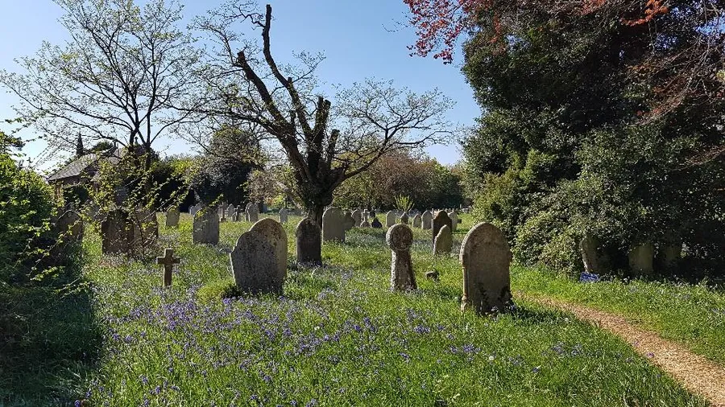
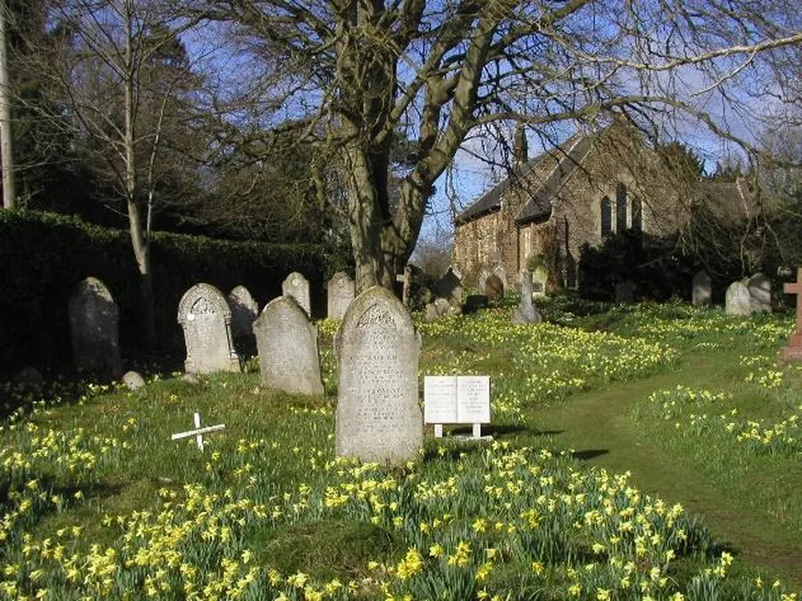
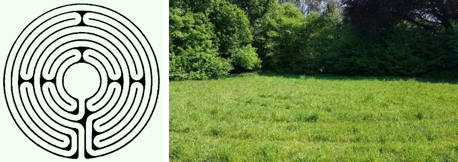

Churchyard Flowers
by Adrian King

Alderholt St. James churchyard is managed with wildlife in mind as a sign indicates as you enter the churchyard by the lower lych-gate.
Over a period of twenty years the church has entered a competition run by the Dorset Wildlife Trust called The Loving Churchyard Project. They received a certificate each year frequently a gold one but sometimes just highly commended.
The churchyard dates from the opening of the church in 1849 and graves date from that time to present with an area for the future currently being used as a paddock.

John Hensel said
“The new area dates from 1982 and a team of mowers cut the grass between the graves every week in the summer. The older areas are managed by a contract gardener with his strimmer. This is now carried out in a designated fashion with some areas being cut monthly from June and other areas being cut once, twice or three times from June to October.
"We aim to collect the strimmed grass once it has dried off to lower the fertility of the ground and encourage the finer grasses and smaller flowers. This is particularly important after the main big cut in July and it is surprising how quickly the task is accomplished by a team of volunteer rakers.”
John Hensel produced a Flower Count every month from February to August in the Parish News. Here is a list of Flowers and Shrubs that have appeared in his count
- Aquilegia
- Barren Strawberry
- Bay
- Beaked Hawksbeard
- Birds Foot Trefoil
- Bitter Cress
- Black Bryony
- Black Knapweed
- Blackberry
- Blackthorn
- Bluebell
- Box
- Broom
- Bugle
- Buttercup
- Cats ear
- Centaury
- Chickweed
- Choisya
- Common Field Thistle
- Common Sorrel
- Common Speedwell
- Cotoneaster Horizontalis
- Cow Parsley
- Crab Apple
- Creeping Buttercup
- Crocus
- Cuckoo Flower
- Daisy
- Dandelion
- Devil’s Bit Scabious
- Dock
- Dog Rose
- Dogs Mercury
- Early Forget-me-not
- Elder
- Few Leaved Hawkweed
- Field Thistle
- Foxglove
- Germander Speedwell
- Geum
- Goose Grass (Cleavers)
- Greater Celandine
- Greater Columbine
- Greater Stitchwort
- Ground Elder
- Ground Ivy
- Groundsel
- Hairy Bitter Cress
- Hairy Chickweed
- Harebell
- Hawthorn
- Hazel (male and female)
- Heath Bedstraw
- Heath Milkwort
- Hedge Parsley
- Herb Robert
- Himalayan Balsam
- Hoary Plantain
- Hogweed
- Holly
- Honeysuckle
- Hop-Leaf Trefoil
- Knapweed
- Laurel
- Leafy Hawkweed
- Lesser Stitchwort
- Lesser Willowherb
- Magnolia
- Martagon (Peruvian Lily)
- Meadow Buttercup
- Milk Thistle
- Montbretia
- Mouse-Eared Hawkweed
- Oxalis
- Ox-Eye Daisy
- Periwinkle
- Pignut
- Pineapple Weed
- Pink Campion
- Pink Clover
- Primrose
- Privet
- Purple Vetch
- Ragwort
- Rape
- Red Dead Nettle
- Red Oxalis
- Rhododendron
- Ribwort Plantain
- Robinia
- Rough Hawkbit
- Self-Heal
- Shepherds Purse
- Sheep Sorrel
- Shining Cranesbill
- Smooth Hawk’s Bit
- Snowdrop
- Spanish Bluebell
- Speedwell
- Star of Bethlehem
- Stinging Nettle
- Sycamore
- Thyme leaved
- Tormentil
- Vetch
- Viburnum
- Violet
- Wall Speedwell
- Weigela
- White Bryony
- White Clover
- White Deadnettle
- Wild Daffodil
- Wild Strawberry
- Wood Anemone
- Wood sage
- Yarrow
- Yellow Corydalis
- Yew
The Churchyard is awash with colour in spring. First Snowdrops then Crocuses followed by Wild Daffodils and finally Bluebells and Wood Anemones.

A grass labyrinth was once made in the paddock towards the bottom of St. James Church Yard. It was envisaged in 2012 and first available for use between 7.30pm and 9.00pm on Tuesday 15th July 2014.
People were encouraged to walk the labyrinth slowly as an aid to contemplative prayer and reflection as a spiritual exercise or as a form of pilgrimage. The path was 20 inches wide and about half a kilometre long in 7 concentric part circles.
Labyrinths were a feature of many medieval cathedrals. Unlike a maze they have only one path as there are no dead ends.

Unfortunately with fewer volunteers available, the Labyrinth is no longer maintained and has dissapeared.